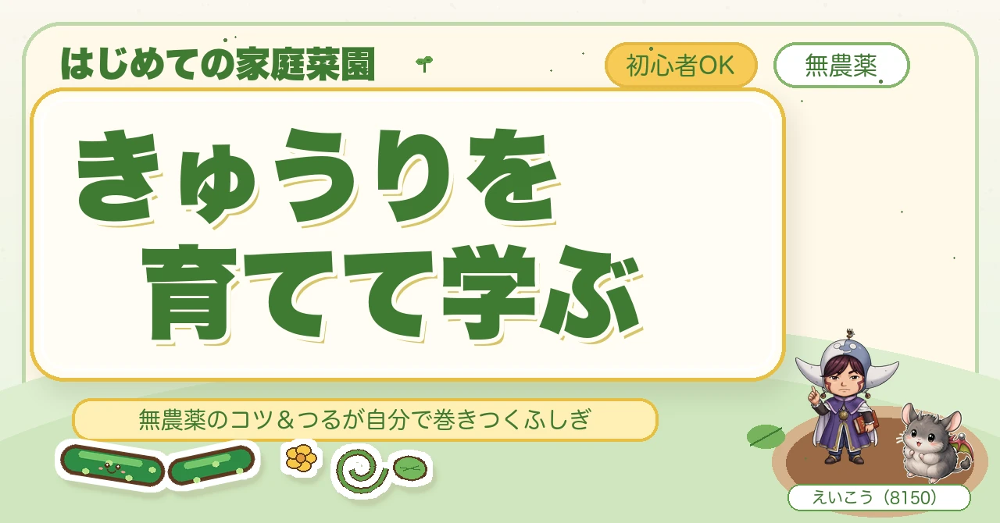
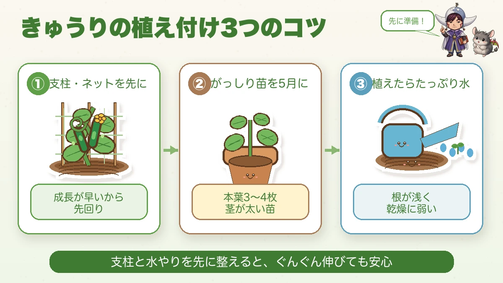
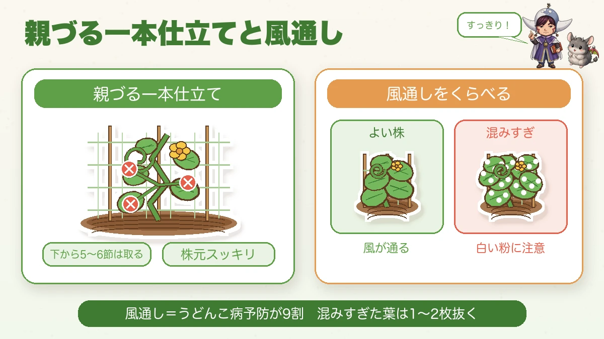
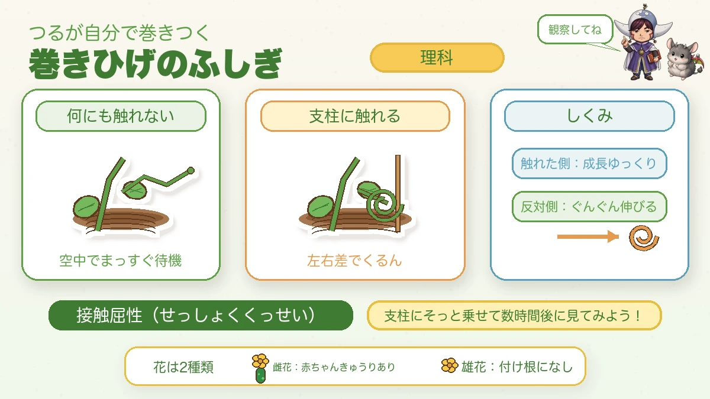

きゅうりを育てて学ぶ🥒 無農薬のコツと「つるが自分で巻きつく」ふしぎ

🗨️「葉っぱが白い粉をふいてきた…」
🗨️「オレンジの小さい虫に食べられる」
🗨️「つるの先のクルクル、あれ何なん?」
どうも、8150（えいこう）です🌱 家庭菜園歴8年、有機・無農薬でやってる、野菜と理科が好きな人間です。
「育てて学ぶ家庭菜園」第3弾は、夏の食卓の相棒きゅうり🥒 とにかく成長が早いのが特徴で、うまくいくと毎日採れます。採れすぎて近所に配るくらい(笑)
そして今日の理科ネタは、子どもがいちばん食いつくやつです。つるの先の「巻きひげ」が、どうやって自分で支柱に巻きつくのか——これ、触って確かめられるんですよ。もちろん私は無農薬。育て方とセットでお話しします☺️
育てる①：植え付けは「先にネットを張る」
まず押さえる栽培データ
- 科：ウリ科（かぼちゃ・すいか・ゴーヤ・メロンの仲間。同じ場所は2〜3年あける）
- タネまき：3月下旬〜4月（加温）／4〜5月なら畑に直まきもOK
- 植え付け：4月下旬〜5月中旬（遅霜の心配がなくなってから）
※時期は中間地（関東〜関西の平野部）が目安。寒い地域は少し遅らせ、暖かい地域は早めに。
📖 この記事の目次
きゅうりで最初にやってほしいのが、支柱・ネットを先に立てておくこと。

なんできゅうりだけ先かというと、成長がめちゃくちゃ早いから。植えて2〜3週間もすると、つるがぐんぐん伸びて「あ、支柱まだやったわ…」となりがちなんです。私も1年目、後手に回ってつるが地面を這い、そこから虫と病気にやられました。ほんま笑うしかなかった(笑)
- 苗はがっしりしたものを5月に：本葉3〜4枚くらいの、茎が太い苗を選びます。霜の心配が消えてから植えましょう。
- 株間は40〜50cmあける：混みすぎると風通しが悪くなって、うどんこ病のもとになります。
- ネットか合掌式の支柱を先に（高さ1.8〜2mが目安）：植える前か、植えたその日に立てておくと後がラクです。
- 植えたらたっぷり水：きゅうりは根が浅くて乾燥に弱いので、株元にしっかり。
育てる②：無農薬のコツは「風通し」＝うどんこ病を防ぐ
きゅうりの一番の敵が、葉が白い粉をふくうどんこ病。これ、風通しの悪さでぐっと出やすくなります。

おすすめは親づる一本仕立て。真ん中の親づるを主役に上へ伸ばして、下から5〜6節までの脇芽・子づる・雌花は早めに取る。株元をスッキリさせると、風が通ってうどんこ病が出にくくなります。株も疲れにくいですよ。
「実になる雌花まで取るの!?」って思いますよね。でも株がまだ小さいうちに実をつけさせると、株が疲れて後半バテるんです。ここはグッと我慢——あとでたくさん採るための下ごしらえやと思ってください☺️
うどんこ病は予防が9割。出てしまった葉は早めに取って、株の中がジャングルにならないように。混みすぎた葉を1〜2枚抜くだけでも全然ちがいます。「もったいない」と思うけど、ここは思いきって、が正解なんですよね。
育てる③：ウリハムシ対策と、水はとにかくたっぷり
もう一つの敵が、ウリハムシ。オレンジ色の小さい甲虫で、ウリ科の葉が大好物。とくに苗が小さいうちにやられると一気に弱ります。
対策は、苗のうちは行灯（あんどん）で囲うのが効きます。肥料袋やペットボトルで苗の周りをぐるっと囲うだけ。キラキラも嫌がるので、株元にアルミホイルや銀色のマルチを敷くのもおすすめです。朝は動きが鈍いので、見つけたら手で捕るのも地味に効きます。
そして水。きゅうりは体のほとんどが水でできてます。乾かすと味が落ちたり、実が曲がったりするんです。夏は朝、1株にジョウロ1杯（2〜3リットル）を目安にたっぷり（土の表面が乾いていたら合図）。敷き藁やマルチで土の乾燥を防ぐと、味がぐっと安定しますよ。
育てる④：追肥と収穫で「毎日採れる」を続ける
きゅうりは"肥料食い"。実がなり始めると、栄養がどんどん実に使われます。だから実がつき始めたら、2週間に1回、株のまわりに有機肥料（ぼかしや鶏ふん）をひとつかみ。これをサボると、実が細くなったり、先が曲がったり、株が早くバテます。
そして収穫。きゅうりは18〜20cmになったら、朝のうちに採るのがコツ。大きくしすぎると、その実に栄養をぜんぶ取られて株が一気に疲れ、次が採れなくなります。「ちょっと小さいかな」で採るくらいがちょうどいい。毎朝ひと回り見て、育ちすぎる前にどんどん採る——これが「毎日採れる」の正体です🥒
学ぶ：つるが自分で巻きつく「巻きひげ」のふしぎ🌀
さあ、お待たせしました。きゅうりを育てたらぜったい観察してほしいのが、つるの途中から出る細いひげ——巻きひげです。

この巻きひげ、支柱に触れると、触れた側はあまり伸びず、反対側がぐんぐん伸びるんです。すると左右で伸び方に差ができて、くるん、と内側に巻きついていく。これ、「接触屈性（せっしょくくっせい）」という、植物が"触れたもの"に反応する性質なんです。
むずかしい名前が出てきましたけど、大丈夫。やることは超シンプル。伸びてきた巻きひげを支柱にそっと乗せて、数時間後にもう一回見る。それだけ。ちゃんと巻きついてます。子どもと「ほんまに巻いてる!」ってなる瞬間、最高ですよ☺️ 何にも触れてない巻きひげは、空中でまっすぐ待機してるので、見比べると違いが一目でわかります。
おまけ：きゅうりの花は2種類あるんです🌸 トマトやなすは1つの花にメシベもオシベもある（両性花）んですが、きゅうりは雌花と雄花が別々。見分け方はカンタンで、花の付け根に小さいきゅうりの赤ちゃんが付いてるのが雌花、付いてないのが雄花です。「花は咲くのに実がならへん…」ってときは、それ雄花を見てるのかもしれません。安心してください、きゅうりは受粉しなくても実がなる品種が多いので、雌花さえ咲けば基本ちゃんと実になります🥒
まとめ
- きゅうりは成長が早い！支柱・ネットは先に立てておく
- 無農薬のコツは親づる一本仕立て＋下葉かきで風通しよく（うどんこ病は予防が9割）
- ウリハムシは苗のうちを行灯でガード＋キラキラで撃退。水は朝たっぷり
- 実がつき始めたら2週間に1回追肥。18〜20cmで朝採り＝「毎日採れる」の秘訣
- 巻きひげは触れると巻く（接触屈性）。雌花の付け根には小さな実。花で見分け🌸
きゅうりは手をかけたぶん、毎日ちゃんと返してくれる野菜です。採れたてを丸かじりすると、みずみずしさが全然ちがいますよ🥒
次回もお楽しみに🌱
きゅうりネット
植える前か、植えたその日に張ってしまうのが正解です。成長が早いので、あとからでは間に合いません。
![[商品価格に関しましては、リンクが作成された時点と現時点で情報が変更されている場合がございます。]](https://hbb.afl.rakuten.co.jp/hgb/56d221a0.da732c49.56d221a1.b57a6709/?me_id=1230952&item_id=10006162&pc=https%3A%2F%2Fthumbnail.image.rakuten.co.jp%2F%400_mall%2Fnou-nou%2Fcabinet%2Fnousi2%2F0108008000005.jpg%3F_ex%3D240x240&s=240x240&t=picttext "[商品価格に関しましては、リンクが作成された時点と現時点で情報が変更されている場合がございます。]")

支柱（高さ1.8〜2m）
合掌式に組むと風に強くなります。きゅうりは背が高くなるので、短いものだと途中で足りなくなります。
![[商品価格に関しましては、リンクが作成された時点と現時点で情報が変更されている場合がございます。]](https://hbb.afl.rakuten.co.jp/hgb/56d221a0.da732c49.56d221a1.b57a6709/?me_id=1230952&item_id=10017113&pc=https%3A%2F%2Fthumbnail.image.rakuten.co.jp%2F%400_mall%2Fnou-nou%2Fcabinet%2F5010356000109-01.jpg%3F_ex%3D240x240&s=240x240&t=picttext "[商品価格に関しましては、リンクが作成された時点と現時点で情報が変更されている場合がございます。]")
シルバーマルチ
ウリハムシはキラキラを嫌います。株元に敷いておくと、苗が小さいうちの被害が減ります。
![[商品価格に関しましては、リンクが作成された時点と現時点で情報が変更されている場合がございます。]](https://hbb.afl.rakuten.co.jp/hgb/55e77bb2.a973bab2.55e77bb3.28befe28/?me_id=1223148&item_id=10001699&pc=https%3A%2F%2Fthumbnail.image.rakuten.co.jp%2F%400_mall%2Fideshokai%2Fcabinet%2Fam425.jpg%3F_ex%3D240x240&s=240x240&t=picttext "[商品価格に関しましては、リンクが作成された時点と現時点で情報が変更されている場合がございます。]")
発酵鶏ふん
実がつき始めたら2週間に1回、株のまわりにひとつかみ。きゅうりは肥料食いなので、切らすと実が細くなります。
![[商品価格に関しましては、リンクが作成された時点と現時点で情報が変更されている場合がございます。]](https://hbb.afl.rakuten.co.jp/hgb/55e7612a.7de1526b.55e7612b.01a50904/?me_id=1214866&item_id=10002182&pc=https%3A%2F%2Fthumbnail.image.rakuten.co.jp%2F%400_mall%2Fkaju%2Fcabinet%2F00714580%2F03462454%2F07486601%2Fimgrc0071643813.jpg%3F_ex%3D240x240&s=240x240&t=picttext "[商品価格に関しましては、リンクが作成された時点と現時点で情報が変更されている場合がございます。]")
あわせて読みたい